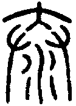
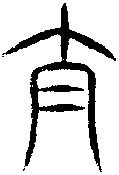
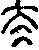
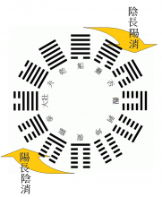

11 泰卦 地天泰
泰，小往大來，吉亨。初九，拔茅茹，以其彙，征吉。九二，包荒，用馮河，不遐遺，朋亡，得尚于中行。九三，无平不陂，无往不復。艱貞无咎。勿恤其孚，于食有福。六四，翩翩，不富以其鄰，不戒以孚。六五，帝乙歸妹，以祉元吉。上六，城復于隍，勿用師。自邑告命，貞吝。
【卦名】
今本：泰 帛書易傳：柰 歸藏：泰 秦簡：柰 清華簡：泰
泰為通泰、通達、寬裕。
泰字在甲骨文中未見，從小篆才有，因此其古卦名較可能是大或柰。古字大通泰。
泰原本為滑順的意思，引申為通泰、通達。《說文》：「，滑也。從廾從水，大聲。，古文泰。」泰字的小篆為大下有一對手，下方為水，象手滑之義。段注：「水在手中，下溜甚利也。與辵部達字義近，皆他達切。《周易》泰，通也。否，塞也。…滑則寬裕自如，故引伸為緃泰，如《論語》泰而不驕是也。」
泰字古文（夳），即「太」，小篆為「大」下加「二」，二在古文中代表字之重覆，因此夳（太）即「大大」，「很大」的意思。
段玉裁解釋曰：「按當作从，取滑之意也。从大聲，轉寫恐失其眞矣。後世凡言大而以為形容未盡則作太，如大宰俗作太宰，大子俗作太子，周大王俗作太王是也。謂太卽說文夳字，夳卽泰，則又用泰為太。展轉貤繆，莫能諟正。」段玉裁認為以泰作夳及太，是轉寫之誤。但無論如何，後世用法泰與夳、太、大皆同。泰同於大。
帛書易傳和王家台秦簡皆作柰，為「奈」的本字。柰原本是一種水果。《說文》：「柰，果也，从木示聲。」段注：「假借為柰何字，見《尙書》、《左傳》。俗作奈，非。」柰原本可能指的是一種祭祀，但該祭祀有何特殊意義不得而知。戰國竹簡的柰字，也有祟的意思。清華簡《筮法》中有〈祟〉一節，其祟字與奈字字形相當接近。但祟與泰卦卦義難以互通。柰為泰韻，可能是同音之假借，亦有可能是形近之誤。
多數學者以柰為泰字之假借。
香港中文大學漢語多功能字庫：
古文字「木」、「屮」、「出」訛混，故郭永秉、陳劍認為「柰」、「奈」、「祟」本為一字。戰國竹簡用「柰」字來表示禍祟的「祟」，《包山楚簡》簡236：「尚速疽（瘥），母（毋）又（有）祟」，意謂期望盡快病癒，沒有鬼神的禍害。」
縱觀泰之字義和卦義，泰即大人君子的通達之道，相較之下否卦則屬婦人儉吝之道，故帛書本否卦卦名為「婦」，清華簡作「啚」（吝嗇、澀），為大人閉塞未能通達的時候。
【卦義】
通泰、通達。三陽開泰，陰陽融和，萬事如意。
天上陽氣與地下陰氣交流相通，萬物通泰，於時節為一月春暖花開，萬物滋長；於人事則代表上下交融，人與人之間有很好的溝通與交流，一片祥和，萬事如意。
泰卦卦象為天地交泰，原本在地下的坤陰上行，天上的乾陽下降，天地之氣互相交合而通泰。反之，坤陰若停留在下，乾陽停留在上，則為陰陽窒塞，沒有交流而成否卦。
《彖》傳說：「則是天地交而萬物通也，上下交而其志同也。內陽而外陰，內健而外順，內君子而外小人。君子道長，小人道消也。」泰卦的天地之氣有所交流而萬物通暢、滋長繁茂，於人事上，上下有心志的交流溝通而能夠同心一意。
卦辭｢小往大來｣為二體卦象，坤陰在外為小往，乾陽在內為大來。易經以陽為大，喻君子、善良、人之所欲；陰為小，喻小人、邪惡、人之所惡。小往大來為小人離去，君子回來，君子通達之義。邪惡遠離，善良歸來。去的是人之所惡，而來的是人之所欲。
《彖傳》「君子道長，小人道消」則是從卦氣上來解釋，泰卦為陽氣（君子）增長到最好的一卦，相對的則是陰氣（小人）在消退。
{kind=link}
泰卦為十二辟卦中的一月建寅之卦，在卦氣理論中，十月坤卦為陰氣極盛之時，到十一月復卦一陽歸來為一元復始，十二月臨卦陽氣開始增長，一月泰卦陽氣與陰氣達到最完美的均衡與調和，下卦由乾陽居內。從復到泰至乾為陽長陰消，即君子道長，小人道消的歷程；從姤至遯至否一直到坤為陰長陽消，即小人道長，君子道消。由於在「陽長陰消」歷程中泰卦為第三個陽爻歸來的時候，因此春節時門聯常寫「三陽開泰」來形容春天的來臨，典故即是由此而來。
《序卦》：「履而泰，然後安，故受之以泰，泰者通也。」泰卦與否卦為同時相錯又相綜的一對對卦，卦序上是繼小畜與履之後而來。小畜與履卦講的是群眾聚集起來之後（比）君王開始養民（小畜）、設禮教（履），到泰則為人事通泰之時，否卦則完成了一段歷史之興衰。
得泰卦萬事如意，一片和氣，上下交融，有如春天一樣一切都那麼美好。但春光雖美，應慎防物極必反，泰極而否來。
此卦似言商王的衰敗及周的興起，以下乾為周，上坤為商。初九至九三三爻像是講《詩經．緜》「古公亶父，來朝走馬。率西水滸，至於岐下」的故事。六五言周崛起之後，商紂父親帝乙採用和親政策，求得暫時的安寧。上六則言殷商天命已亂，政權不保。
周文王「追尊古公為太王」，太即泰；而《尚書》又有「泰誓」，也是武王伐紂周年後的文告，旨在譴責商紂，詳列其罪狀，謂其天命已盡，因此上天降罪。這些似乎有與「泰」卦內容相互呼應的地方。
泰，小往大來，吉亨。
- 彖曰：泰，小往大來，吉亨，則是天地交而萬物通也，上下交而其志同也。內陽而外陰，內健而外順，內君子而外小人。君子道長，小人道消也。
- 象曰：天地交，泰。后以財成天地之道，輔相天地之宜，以左右民。
【今解】
陰氣離去，陽氣歸來。吉而亨。
小指外面的坤卦（陰氣），大為裡面的乾卦（陽氣）。陰為小人、人之所惡；陽為君子、人之所欲。《彖傳》說：「內健而外順，內君子而外小人。」此為君子歸來而通達的時候，因此吉而亨通。
泰卦卦象又有天地陰陽之氣相交之義，在上的乾陽下降，在下的坤陰上升，天地陰陽相交，因此萬物通泰而生。反之，否卦為乾天陽氣停留在上，坤地陰氣停留在下，為天地陰陽不交，萬物閉塞不通。
虞翻：坤陰詘外，為小往。乾陽信內，稱大來。天地交，萬物通，故吉亨。
蜀才：此本坤卦。小，謂陰也。大，謂陽也。天氣下，地氣上，陰陽交，萬物通，故吉亨。
【字義】
小往大來：《周易》以陽為大，陰為小。在外為往，離去之義；在內為來，回來的意思。「小往」指的是外卦三個陰爻，大來為內卦三個陽爻。反之，否卦乾上坤下為「大往小來」。泰卦由於天上的乾陽下行，地下的坤陰上升，陰陽交流，天地交泰。反之，否卦為天上陽氣停留於上，地下的陰氣滯留於下，陰陽不交，萬物閉塞。朱熹以卦變解釋小往大來，認為泰卦是由歸妹卦卦變而來，小往指的是歸妹卦六三（陰為小）往居四，大來為九四（陽為大）來居三，而成泰。《本義》：「又自歸妹來，則六往居四，九來居三也。」此理不通，泰應當是卦變之起點，歸妹卦由泰卦變化而來才是，因天地乃造物之始，泰卦上坤下乾，天地之體已具，歸妹自泰來為是，泰九三至四，六四至三，成歸妹。小往大來應指上下二體之卦象。蜀才以泰卦為坤卦而來，坤卦下體陰氣去，而陽氣來：「此本坤卦。小，謂陰也。大，謂陽也。天氣下，地氣上，陰陽交，萬物通，故吉亨。」
【象傳注】
天地交：泰卦為天地交之象。乾天原本在上，坤地原本在下。泰卦乾陽下行，坤陰上升，天地之氣交流而通泰。
后以財成天地之道：君以裁成天地之道，君王用以裁斷完成天地之道。后，君也。古后與司同一字，只是左右之差別，都是君主的意思。財成即裁成。朱熹：「財、裁同。」《說文》：「制衣也。」《繫辭》：「化而裁之謂之變。」裁成即決斷、製作以完成之。荀爽作「栽」。虞翻：「后，君也。陰升乾位。坤，女主，故稱后。坤富，稱財。」鄭玄：「財，節也。」
輔相天地之宜：輔相，幫助。輔與相都是幫助之義。宜者義也。虞翻：「相，贊。左右，助之。震為左，兌為右，坤為民，謂以陰輔陽。《詩》曰：宜民宜人，受祿于天。」鄭玄：「輔相，左右，助也。」
以左右民：左，通佐，輔助。右，通佑，保佑。君王以輔助、保佑人民。虞翻：「相，贊。左右，助之。」
【春秋筮例】
《國語．晉語四》董因筮重耳返晉，得「泰之八」。
西元前637年十月，晉惠公去世，十二月秦穆公將晉國公子重耳送回晉國，準備擁立重耳接任晉國國君之位。
重耳到達黃河邊準備渡河回國時問說：「吾其濟乎？」這是雙關語，「濟」原意為過河、渡河，但引申為完成、成事、成功、救濟、幫助等等意思。重耳以是否能夠成功渡河來喻指是否能夠拿下晉國政權。
董因知道重耳的憂心，因此跟重耳報告近來的一些星象觀察，表示充滿了吉象。最後董因說，除了觀察到的星象之外，他還曾經筮了一卦，得到「泰之八」，繇辭說：「天地配亨，小往大來。」現在公子您果然來了（意指重耳為「大人」），怎麼可能不濟呢？於是重耳渡河，召集跟他流亡的群臣，果然得了晉國，並殺了晉懷公於高梁。
「泰之八」具體卦象為何是一千古奇案，不過可以確定的是這是一個多變爻的卦，而且只以泰卦卦辭做為占斷。
初九，拔茅茹，以其彙，征吉。
- 象曰：拔茅征吉，志在外也。
【今解】
拔茅草的根，一拔就一整串的同類根根相連、牽連而出。出征大吉。
此比喻人當慎於始，一但一開始做對了，接下來將成連鎖效應，同類相牽引而出。又可比喻君子呼朋引伴，一但有人開頭，眾人便牽連而出。以此而出征，大吉。
初九為泰卦三個陽爻的開始，卦氣上也是最快回來的一個陽爻，也是首先發難帶動、牽引同類歸來者。初九牽引三個陽爻回來有如拔起茅草的根一樣，一拔就一整串的同類根根相連、牽連而出。初九至九三，三陽相連，故曰「以其彙」（彙為類）。初為地下之位，因此為根象。
以上為傳統之解釋。此外亦可解釋為：拔茅草做餵馬之草料，取茅草的莖以做草料之用，出征吉。
【字義】
拔茅茹，以其彙：拔茅草的根，同類相連一起拔出。茅，茅草。茹有多種解釋，王弼認為是茅草相連之狀：「茅之為物，拔其根而相牽引也。茹，相牽引之貌也。」虞翻認為是根：「茹，茅根。」《說文》則以茹為餵馬：「飤馬也。」彙，類也，帛本作「胃」或「𦳢」。《釋文》：「彙，音胃，類也。」「古文作𦳢。」其彙，指同類。王弼：「三陽同志，俱志在外，初為類首，己舉則從，若茅茹也。」依高亨，「彙」也可解釋作「莖」，則「以其彙」為「以其莖」，意謂拔茅草的根時是從莖部拉起，或者指拔茅草作餵馬之草料，且取茅草之莖以為草料之用。高亨：「彙有草莖之義…拔茅飲馬必用茅莖者，蓋拔茅則連根，連根則帶土，帶土則馬不食也。拔茅茹以其彙，是養其所需以備取用之象也。如此者征吉。」高亨認為，這是拔茅草準備養馬之用，因此說出征吉。鄭玄：「彙，類也。茹，牽引也。茅，喻君有絜白之德，臣下引其類而仕之。」朱熹認為該段應該六字連讀：「郭璞《洞林》讀至『彙』字絕句，下卦放此。」
征吉：出征吉。出征也可喻行事積極而主動出擊。泰卦初九和否卦初六皆言「拔茅茹，以其彙」，泰為陽氣增長，陽為強為壯，因此拔茅茹征吉；而否卦則為陰氣增長，陰為柔為弱，因此曰貞吉，其喻雖同，但因性情不同而有不一樣的決策判斷。
九二，包荒，用馮河，不遐遺，朋亡，得尚于中行。
- 象曰：包荒，得尚于中行，以光大也。
【今解】
取中空的匏瓜來渡河，還沒到達時匏瓜就遺失，同行的朋友因而死亡。這趟旅程在行程當中得到獎賞。
王弼注解在強調該爻講的是君子包容宏大而公正之美德，至宋明儒之後多將「包荒，用馮河，不遐遺，朋亡」解釋為四種不同的美德：具有包容荒穢之物的心胸，徒手渡河的勇氣，遠處不遺漏的深思熟慮，以及不繫絆於朋黨的大公無私。
現代高亨有不同的解釋，認為這是古代渡河救人的故事，讀作「包荒用馮河，不遐遺朋，（悔）亡，得尚于中行」。高亨認為，「包荒」為「匏空」，「包荒用馮河」為以挖空的匏瓜綁在腰間用以渡河，結果渡河時朋友溺水，但並未遺棄朋友，只是朋友最後還是溺水死亡。「得尚於中行」，因臨難不遺棄朋友，這樣的義行受到獎賞。尚作賞。
荀爽以升降來解釋九二經文：「河出於乾，行於地中。陽性欲升，陰性欲承。馮河而上，不用舟航。自地升天，道雖遼遠，三體俱上，不能止之，故曰不遐遺。 」「中，謂五。坤謂朋，朋亡而下，則二得上居五，而行中和矣。」
依升降理論，陽氣輕而欲升，陰氣重而欲降，因此九二會上升至五，而六五會下降至二，而成既濟定。「坤謂朋，朋亡而下」指的是六五會下降。「馮河而上，不用舟航。自地升天」講的是九二上升至五。
虞翻在泰卦中也運用到升降。九二包荒注：「二與五易位，故得上于中行。」九三：「二之五得正，在坎中，故艱貞。」「二上之五據四，則三乘二。故于食有福也。 」六四：「二五變時，四體離飛。」「邑人不戒，故使二升五，信來孚邑，故不戒以孚。」
帛本作：枹妄用馮河，不騢遺，弗忘，得尚於中行。
【字義】
包荒：有多種解釋，但以「匏空」最佳，亦即匏瓜中空而大之義。自王弼始皆解釋為包容荒穢之物，指九二有包容的美德。王弼：「能包含荒穢，受納馮河者也。」包或作苞。姤九五「以杞包瓜」，「包瓜」即孔子說的「吾豈匏瓜」的「匏瓜」，因此包即匏之假借。荒，鄭玄、虞翻、翟玄、許慎，李鼎祚皆作巟。《說文》：「水廣也，从川亡聲。《易》曰：包巟用馮河。」虞翻曰：「在中稱包。荒，大川也。」依虞翻，包荒為在大川中。鄭康成：「荒讀為康，虛也。」高亨以包為匏，荒為虛：「包疑借為匏…匏荒謂瓠空也…古人馮河常抒瓠而空之以為腰舟，《莊子‧逍遙遊篇》『今子有五石之瓠何不慮以為大樽而浮於江湖』…其證一也…包荒用馮河謂匏空而以之涉河也。」
馮河：馮，朱熹：「音憑。」徒手，沒有舟楫等交通工具。馮河，徒手渡河，渡河應以搭船為宜，沒有舟楫而渡河，形容人的勇氣，或者形容人有勇無謀。《論語．述而篇》子路曰：「子行三軍，則誰與？」子曰：「暴虎馮河，死而不悔者，吾不與也。必也臨事而懼，好謀而成者也。」自古對馮河有兩種不同的解讀，一是指人行事莽撞，全憑蠻勇。如孔穎達：「用馮河者，无舟渡水，馮陵于河，是頑愚之人，此九二能包含容受。」二是以「馮河」為一種美德，做此解讀者，也將「包荒，用馮河，不遐遺，朋亡」解釋為泰卦的四種美德，如程頤：「四者處泰之道也。」「馮河謂其剛果足以濟深越險也。」朱震：「用馮河越險之勇以去弊事。」
不遐遺：遐，音俠，遠的意思。遺，遺失。遐也可通徦，《說文》：「徦，至也。」不遐，不遠，或不至、未至的意思。不遐遺，渡河未達對岸或不遠就遺失匏瓜，未能渡水即遺失匏瓜。傳統解釋為不遺漏遠方之事物，指九二具深思遠慮的美德。如程頤：「泰寧之時，人心狃於泰，則苟安逸而已，惡能復深思遠慮及於遐遠之事哉？」
朋亡：失去朋友，朋友渡河而亡。渡河時因為尚未到岸就遺失匏瓜，因此同行的朋友遭滅頂之災。朋或可解釋為朋貝之朋，即錢財，則朋亡意指失去財物。傳統皆以朋為朋黨、朋比之朋，以朋亡為心中沒有朋友，形容人的公正無私，不受朋黨私心的牽絆。如王弼：「无私无偏，存乎光大，故曰朋亡也。」帛書作「弗忘」，陳居淵：「對朋友不能忘恩負義，正與『不遐遺』相應。」
得尚于中行：得賞於中庸的行為。尚，賞，獎賞。中行，通解為中庸的行為，九二居下卦中爻，為具中庸之美德者。這裡或意指旅程當中得到獎賞。
九三，无平不陂，无往不復。艱貞，无咎。勿恤其孚，于食有福。
- 象曰：无往不復，天地際也。
【今解】
沒有不傾斜的平地，離去的一定會再回來，艱苦守正則可免於罪咎。不去擔憂這是否會應驗，一定可以享有其福報。
九三為泰卦三陽的極盛，此段言君子要居安思危，才能長保安泰之道。天道循環，久泰則否將至，但若能艱苦守正，則能保有更長的安泰時光。此爻也預示陰氣將回來，上六爻將泰極否來，城復于隍。
項安世：无平不陂，為三陽言之；无往不復，為三陰言之。兩言无不者，明此皆天道之必至，而有孚者也。
【字義】
无平不陂，无往不復：比喻天道循環，福禍相倚，告戒君子要居安思危。承平之世久了，應當小心即將走下坡。小人消退之後也會再歸來。平即泰，陂即否。無平不陂，泰中有否；「往」即卦「小往大來」的「小往」。「復」原本講的是陽氣歸來，這裡講的則是陰氣走了之後（小往），會再歸來。泰卦陽氣增長到九三為止，因此九三為泰卦的極盛。《象傳》說：「无往不復，天地際也」，九三剛好在天地交際的位置，也就是乾天的上爻，卦氣再繼續發展則是坤地的下爻，因此為天地際，也是卦氣即將從陽變陰的時候，王弼說的：「處天地之將閉，平路之將陂，時將大變，世將大革。」「陂」，音「波」，不平、傾斜。宋衷：「地平極則險陂，天行極則還復。」
勿恤其孚，于食有福：不用擔憂天道是否會應驗，一定可以享有其福報。恤，憂慮、擔心。孚，信，可信，應驗，朱熹：「孚，所期之信也。」言天道循環乃是可信之真理，必定應驗。食，食祿、祿食。於食有福，在其食祿上可享有福報。言只要相信天道循環，艱貞，則能享有福報。孔穎達：「恤，憂也。孚，信也。信義先以誠著，故不須憂其孚信也。信義自明，故於食祿之道，自有福慶也。」虞翻：「艱，險。貞，正。恤，憂。孚，信也。」程頤：「處泰之道，既能艱貞，則可常保其泰，不勞憂恤，得其所求也。不失所期為孚。如是，則於其祿食有福益也。祿食，謂福祉。」
六四，翩翩，不富以其鄰。不戒，以孚。
- 象曰：翩翩不富，皆失實也；不戒以孚，中心願也。
【今解】
群眾群集而來歸順，他們因為鄰居的侵擾而貧窮。不需對這些來歸的群眾警戒，而是要以孚信之心相待。
象曰「翩翩不富，皆失實也」，陽為實，泰卦自六四開始不再有陽，故曰「失實」，失實者失乾陽也。乾為金玉，失實有失金之意。又六四互體為兌，兌為毀折，有失財之象。
此爻似在講古公亶父讓利讓地而得民之事，《史記．周本紀》：「古公亶父復脩后稷、公劉之業，積德行義，國人皆戴之。薰育戎狄攻之，欲得財物，予之。已復攻，欲得地與民。民皆怒，欲戰。古公曰：『有民立君，將以利之。今戎狄所為攻戰，以吾地與民。民之在我，與其在彼，何異。民欲以我故戰，殺人父子而君之，予不忍為。』乃與私屬，遂去豳，度漆、沮，踰梁山，止於岐下。豳人舉國扶老攜弱，盡復歸古公於岐下。及他旁國聞古公仁，亦多歸之。」后稷、公劉是周的祖先，並以農業立國，古公亶父為周崛起的奠基者，稱「太王」，在豳時遇戎狄侵伐，由於不忍讓百姓打仗，因此陸續將財物及土地讓給戎狄，離開豳地遷居到岐，人民聽聞古公亶父仁德愛民，於是豳地以及附近鄰國百姓紛紛前往歸順，岐下也成為周崛起的地方。
【字義】
翩翩：鳥群飛而下，飛舞的樣子，此形容群眾往來之狀。六四急欲呼朋引伴與下卦君子相應，初九曰「拔」，因乾陽在下，其勢往上，故曰「拔」。三陰在上，陰氣重，其勢欲往下與眾陽相應，故曰「翩翩」。孔穎達：「四主坤首，而欲下復，見命則退，故翩翩而下也。」向秀：「翩翩，輕舉也。」《釋文》作「篇篇」：「篇篇如字。《子夏傳》作翩翩，向本同，古文作偏偏。」《詩經‧四牡》：「翩翩者鵻，載飛載下，集于苞栩。」翩翩也可解釋為得意貌，《穆天子傳》「有皎者鴼，翩翩其飛」，郭璞注：「言得意也。」《搜神記》：「羿請不死之藥於西王母，嫦娥竊之以奔月，將往，枚筮之於有黃。有黃占之曰：吉。翩翩歸妹，獨將西行。逢天晦芒，毋恐毋驚。後且大昌。」
不富以其鄰：謙六五「不富以其鄰，利用侵伐，无不利」，小畜九五「有孚攣如，富以其鄰」，家人六四說「富家」。「不富以其鄰」有多種不同的解釋方式。一、因為鄰居而貧窮。以是因為，不富即貧窮。因為惡鄰而導致貧窮。鄰國侵擾，導致國窮民困，因此謙六五說「不富以其鄰，利用侵伐」。反過來，富以其鄰為鄰居是好鄰居，因敦親睦鄰而富有，有孚孿如為鄰居和睦之狀。二、以為及，富以其鄰為財富及於鄰居，財富與鄰居共享。不富以其鄰為財富不及於鄰居，財富不與鄰居共享。三、以為用，引申為驅使，傳統多作此解。富以其鄰，以財富驅使鄰居幫忙。不富以其鄰，不用財富就可驅使鄰居，即以道義來驅使。鄰居指六五和上六等共三個陰爻，共同與下面三陽相應，有棄暗投明之義。相較於「富以其鄰」是以財富驅使，為的是利，「不富以其鄰」則是以志趣、理念來驅使。程頤：「夫人富而其類從者為利也，不富而從者其志同也。」不富還能夠同在一起的，是因為理念志趣相投。朱熹則認為這是「翩翩，不富以其鄰」為小人會合：「三陰翩然而下復，不待富而其類從之，不待戒令而信也。其占為有小人合交以害正道，君子所當戒也。」
不戒以孚：傳統解釋，不待告誡即相信。象曰：「不戒以孚，中心願也。」之所以不用告誡，是因為這是內心心甘情願的事。朱熹：「三陰翩然而下復，不待富而其類從之，不待戒令而信也。」該句另有兩種可能的解釋。一是讀作「不戒，以孚」，言翩翩來歸的群眾，不當對他們保持警戒，應當以誠信相待。二、戒為警戒，孚亦通俘，俘虜。不戒以俘，不當以俘虜來當警戒之兵。
六五，帝乙歸妹，以祉元吉。
- 象曰：以祉元吉，中以行願也。
【今解】
帝乙年少的女兒出嫁，因此而有福祉，大吉。
此為商王帝乙（商紂帝辛的父親）嫁女兒的故事，時殷商勢力已衰，面對周逐漸興起的威脅，為了安撫、討好周，將女兒嫁給了西伯，也就是後來的周文王。此為殷商的和親策略，因此保有和周暫時的和平關係及商天下的安定，因此說「以祉元吉」。六五為君位，與九二臣位相應，六五陰柔，喻商王室之衰，九二陽剛，喻周之盛。
【字義】
帝乙歸妹：帝乙嫁女兒。虞翻：「帝乙，紂父。」程頤：「史謂湯為天乙，厥後有帝祖乙，亦賢王也。後又有帝乙。《多士》曰：自成湯至于帝乙，罔不明徳恤祀。稱帝乙者，未知誰是。以爻義觀之，帝乙制王姬下嫁之禮法者也。」程頤認為，帝乙可能是上古制定王姬下嫁之禮法的人。朱震則認為，帝乙是商湯。顧頡剛考證認為，帝乙即帝辛（商紂）之父親，因此虞翻之說為是。帝乙時殷商衰，因此嫁女兒給西伯與周和親。高亨亦贊同並採用顧頡剛的見解：「帝乙歸妹者，嫁少女於文王也。」「文王次妃即大姒，武王之母也。」歸妹，嫁妹。女子嫁人為歸。另有說法認為「妹」為妹妹，歸妹為長男代父職嫁妹。虞翻：「震為帝，坤為乙。帝乙，紂父。歸，嫁也。震為兄，兌妹，故嫁妹。」妹雖然為「妹妹」（兄妹之妹）之意，但妹也是年輕女子的通稱，並非只有長兄才能稱少女為妹。王弼注歸妹卦：「妹者，少女之稱也。」
以祉元吉：因為擁有福祉而大吉。祉，福也。帛書作「齒」。但祉似有生子的涵義。鄭玄：「生育者嫁娶之貴。仲春之月，嫁娶男女之禮，福祿大吉。」王弼：「履順居中，行願以祉，盡夫陰陽交配之宜，故元吉也。」虞翻：「謂五變體離，離為大腹，則妹嫁而孕，得位正中，故以祉元吉也。」鄭玄以「生育」，王弼以「盡夫陰陽交配之宜」，虞翻以「妹嫁而孕」解釋祉，顯然祉是與生子有關。
中以行願：《九家易》：「五下於二，而得中正，故言中以行願也。 」
【春秋筮例】
《左傳．哀公九年》：趙鞅救鄭，陽虎以周易筮之，遇泰之需，曰：「宋方吉，不可與也。微子啟，帝乙之元子也。宋、鄭，甥舅也。祉，祿也。若帝乙之元子歸妹而有吉祿，我安得吉焉？」乃止。
陽虎直接以泰六五爻辭「帝乙歸妹，以祇元吉」來占斷。
他說，宋國一方為吉，所以不可以跟他作戰。宋國始祖微子啟是帝乙的長子（元子），宋和鄭兩國則是甥舅關係。祉就是祿，如果帝乙的長子嫁妹而有吉祿（指宋國，宋國為微子啟之後），那麼我們這邊那有吉可言？陽虎以為，「以祉元吉」的吉是落在宋國一方，不是我方，彼方吉則不利我方，因此不利征伐宋。
微子啟也是商紂的庶兄，帝乙長子，陽虎以帝乙之長子嫁妹解釋該爻。雖然於典故及文義與虞翻所說有出入，但亦可證帝乙即商紂之父。
上六，城復于隍，勿用師。自邑告命，貞吝。
- 象曰：城復于隍，其命亂也。
- 帛書《昭力》：子曰：師之王參賜命，與比之王參毆，與柰之自邑告命者，三者國君之義也。
- 帛書《昭力》：問：柰以之「自邑告命」何胃也？子曰：昔之賢君也，明以察乎人之欲惡，《詩》《書》以成其慮，外內親賢以為紀剛，夫人弗告則弗識，弗將不達，弗遂不成。易曰：柰之「自邑告命，吉」，自君告人之胃也。
【今解】
城牆倒塌成為一片廢墟，不宜出師。城內開始自行發布命令，然而命令已經大亂，若還以此堅定自守則會悔恨。
泰道已至尾聲，泰極變否，國家開始動亂，不需出動軍隊即會滅亡。
【字義】
城復於隍：城倒，傾頹成廢墟。隍，城外的溝池。古時掘土為隍，積土成城，隍低城高，隍圍在城外為保護的溝池，就是現今說的「護城河」。城復於隍直譯就是城倒塌到溝池裡，此形容城牆傾頹的樣子，比喻國家動亂將亡。上六為泰卦終了的一爻，泰極轉否，因此城復於隍。鄭玄：「隍，壑也。」虞翻曰：「隍，城下溝，无水稱隍，有水稱池。」《釋文》：「隍子夏作堭，姚作湟。」
勿用師：不需動用軍隊。此言國家自己已動亂不安，不需動用軍隊征伐自己就會滅亡。師，軍隊也。
自邑告命：命令從城邑中發布。邑原本為「國」，或大夫之封地。《說文》：「國也。」段注：「左傳凡偁人曰大國，凡自偁曰敝邑，古國邑通偁。…《周禮》四井為邑，《左傳》凡邑有宗廟先君之主曰都、無曰邑。」《周禮》：「九夫為井，四井為邑，四邑為丘，四丘為甸，四甸為縣，四縣為都。」根據鄭注，邑是諸侯給大夫的封地。《周禮》則以邑為行政單位，「九夫為井，四井為邑」。總而言之，邑原意是「國」，也做為大夫之封地，但到周時又作為一個小小的行政區域。命令出自小城邑，則國已亂矣。
貞吝：貞定則將悔恨。言國家動亂，命令已不可行，自邑告命也已經無濟於事，所以堅定守正亦為時已晚，仍不免於悔吝。吝有由吉轉凶之義。君子當謀始，防患於未然，坤卦初六說「履霜堅冰至」，泰初九「拔茅茹，以其彙」都是在申明這個道理。泰卦上六是國家已經動亂，大勢已去才在申告命令，力挽狂瀾，但為時晚矣，應當在九三極盛之前，就開始防患於未然，則可長保安泰。
城復于隍，其命亂也：「其命亂」有兩種解釋，一是指「天命已亂」，謂殷商的天命已盡，將由周來繼承。二是指命令已大亂。命令之所以大亂，是因城邑內自行公告自己的命令，換句話說商天子的命令已不可行，命令已大亂。
【彖傳注】
小往大來，吉亨：重述經文。乾陽為大，坤陰為小。坤陰在外為小往，乾陽在內為大來。因小往得來，而得吉而亨之占。
則是天地交而萬物通也，上下交而其志同也：以上下二體卦象解釋經文。天地交則萬物通，乾為天，坤為地。乾天原本在上，陽氣由上而下行。坤地原本在下，陰氣由下而上，此為天地交之象，以天地自然來講通泰之道。上下交而其志同，上指乾陽，下指坤陰。上下交就人倫而言，上下若能交，則一氣相通而志同，此言人事之通泰。易者交易、變易也，易經講的是陰陽交易、變易之道。卦象、陰陽有交易，有變易則萬物生，萬事通泰，沒交易沒變易則天地閉塞，萬事不通。這個原則可從泰否兩卦清楚看出，並貫穿六十四卦。「則是天地交而萬物通也」，何妥：「此明天道泰也。夫泰之為道，本以通生萬物。若天氣上騰，地氣下降，各自閉塞，不能相交，則萬物無由得生。明萬物生，由天地交也。 」「上下交而其志同也」何妥：「此明人事泰也。上之與下，猶君之與臣，君臣相交感，乃可以濟養民也。天地以氣通，君臣以志同也。 」
內陽而外陰，內健而外順，內君子而外小人：此進一步發揮闡述泰卦之上下二體的卦象。乾陽在內，坤陰在外，故曰「內陽而外陰」。乾卦剛健，坤卦柔順。乾為君子，坤為眾為小人，故曰「內健而外順，內君子而外小人」。內、外有兩種解釋方式。一是空間的內外，內卦為陽為健為君子，外卦為陰為順為小人。內外也可做動辭，內為接納、容納，外為排除。接納陽氣、剛健之德、君子。排除陰氣、柔順之德，小人。「內陽而外陰，內健而外順」，何妥：「此明天道也。陰陽之名，就爻為語。健順之稱，指卦為言。順而陰居外，故曰小往。健而陽在內，故曰大來。 」
君子道長，小人道消也：此就陰陽消息而言泰卦卦象。泰卦為陰陽消息而來。乾坤先是旁通而成復與小畜，復卦開始進入陰陽消息循環，首先是增加一陽而成臨卦，臨卦再增一陽成泰。因此泰卦是陽氣增長，陰氣消退之卦。陽為君子，陰為小人，此為君子道長，小人道消之象。泰卦也是三陽三陰之卦卦變的開始。朱熹以泰卦是由歸妹而來，是倒果為因。天地與乾坤是造物之始，他卦皆由乾坤而來，不是他卦而生乾坤。泰卦上為坤，下為乾，具乾坤之元，三陽三陰之卦都由泰卦而來。歸妹應是由泰卦九三至四，六四至三而成。以歸妹生泰卦，則是以六子生乾坤。
勘誤
“六五言周掘起之後，……”，“……，岐下也成為周掘起的地方。”此二處之“掘”似應為“崛”之誤。
“不需告戒鄰人即相信。象曰：「不戒以孚，中心願也。」意思為，之所以不用告戒的方式，是因為這是內心心甘情願的事，自動就會來，所以不用再告戒來告戒去的。”中“告戒”似應為“告誡”。
“六二陰柔，喻商王室之衰……”此處“六二”或為“六五”？